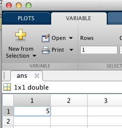
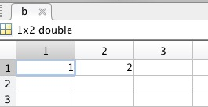
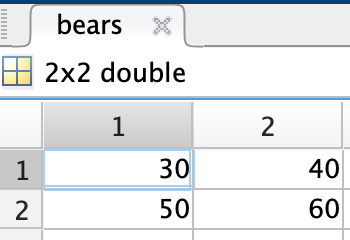
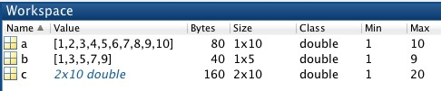
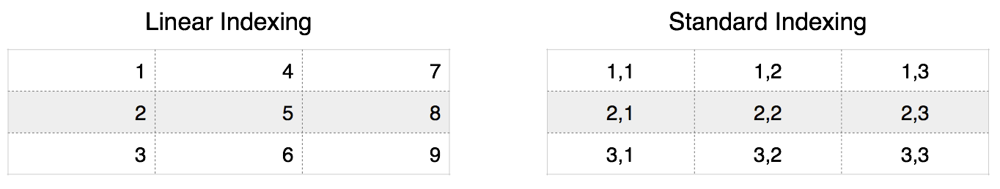
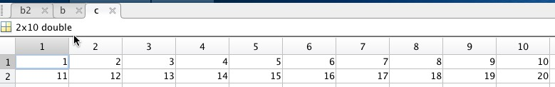

Numeric Arrays
for dealing with numbers
Numeric arrays contain numbers (as opposed to characters or booleans).
Syntax Overview
| Syntax | Special Character | Meaning |
|---|---|---|
| n = 5 | = | assign the value 5 to the variable n |
| n = [1 3 4 5] | [ ] | Concatenates numeric values into the row vector n |
| n = [1; 3; 4 5] | ; | Semicolon means the new line. Concatenate into column vector |
| n = 1:10 | : | Create a row vector with the values 1 through 10 |
| n = 2:2:8 | : | Create a row vector of even numbers from 2 to 8 |
| n(2) | ( ) | Index the second element from the variable n |
| n(1, 3) | ( ) | Index first row, third column |
| m = n' | ' | Transpose (swap row and column indices) |
| n = [ ] | [ ] | Delete all elements from n |
Relevant Mathworks Documentation
Storing Numbers
When you want to store a number in a variable, you need to create a numeric array. This is very easy to do in MATLAB.
Notice that when you type the number 5 in the command window, MATLAB automatically creates a variable called ans and places that variable in the workspace.
Technical Term Alert
A variable with just a single value (numeric or otherwise) is commonly referred to as a SCALAR. (1)
- Technical Annoyance. Technically, all MATLAB variables are matrices. So, even though our new variable can be called a scalar, it is stored in MATLAB as a 2D matrix.
If you double-click on ans in the workspace, you will open up a new window called the Variable Editor.

In the Variable Editor, you can explore the contents of any variable in the workspace. Notice that variable ans looks like a spreadsheet (because its data structure is a 2D array). Also, notice that the number 5 was automatically placed in the top left corner of this matrix. This position has an index of 1 or (1,1).
Warning
ans is a reserved name in MATLAB. DO NOT name any of your variables ans or you will get an unexpected result or an error. Consider what happens when you type another number in the command window:
Notice how the value for ans has been replaced with the number 10, simply by typing 10 in the command window. The 5 is gone.
Assigning Arrays
Creating a numeric vector
Since the basic MATLAB data structure is a matrix, it is quite easy to assign an array of numbers to a numeric variable. To do so, use the following syntax.
name_of_variable = [array of numbers]
In this syntax, the square brackets ( [ ] ) are used to concatenate a collection of numbers into an array.
For example, type the following in the command window:
| Concatentating numeric values | |
|---|---|
You should now see a variable called b in the workspace. Double-click on this variable to open up the variable editor:

The value 1 is stored in the top left corner position, or index (1,1), The value 2 is stored one element over in index (1,2).
Creating a numeric matrix
To add a second row to an array, you use the semicolon ;. The semicolon indicates a line break in a matrix. For example, type the following in the command window:
Inspecting the bears variable reveals the following matrix with two rows of data…

…with numbers in the standard index positions of (1,1), (1,2), (2,1), and (2,2).
Fun Fact: special characters can mean more than one thing
The semi-colon is also used to indicate the end of a programming line and suppresses output to the command window. This is called overloading a function, kind of like we are overloading you with all these fun little arcane factoids. We'll get to using semi-colons at the end of a line in a later module.
Quickly Generating Arrays
The colon character : can be used to automatically generate an increasing or decreasing series of numbers, as follows:
After executing the above lines in the command window, you should see the following variables in the workspace:

The variable
ais filled with numbers 1 through 10. The variablebhas only odd numbers from 1 to 9. The command1:2:10indicates to skip every other number. Also note thatchas two rows (Size: 2 X 10). To createc, we had to use the concatenating square brackets and a semi-colon. The semi-colon indicates "new row" in the array.
Don't forget your square brackets!
What happens if you don't use the square brackets when assigning data to a variable? Consider the following:
What values do you think c will end up after this line of code? Try it now in the command window
c have the expected values? What about the variable ans?
The result is the assignment of values to two different variables. The values 1 through 10 are assigned to the variable c while the values 11 through 20 are assigned to the variable ans. Why ans? Because no explicit variable was indicated in the second line of code. Without the square brackets, the semi-colon means "new line of code", which is the same as if you typed two separate lines of code in the command window, like this:
This is why programming is hard. Notice that we didn't get an error, we just got something unexpected. You always have to be very careful with your syntax or you might get an unexpected result...
Series functions
There are many functions that can create a series of numbers.
For example, the function ones accepts inputs to indicate how many ones it should create
| Create Array of Ones | |
|---|---|
The inputs into ones indicates the following: 1) The first input is the number of rows. 2) the second input is the number of columns.
Similarly, the function zeros creates a series of zeros.
…Notice how the inputs into zeros are similar to the inputs into ones: The first input is the number of rows and the second input is the number of columns
The function repmat creates an array that repeats the inputted data. Here we take the array 1 2 and repeat it 10 times across the rows. The third input, 1, indicates no repeating across columns (Just one column of data).
| Repeat Array | |
|---|---|
Challenge: Series Functions
What do you the think would happen if we changed the 3rd input in repmat to 2?
| Repeat Array | |
|---|---|
You would get an extra set of columns containing the repeated array 1 2
Indexing Arrays
To index a numeric variable, you simply use the parentheses ( ) after the name of the variable. The following shows the equivalent indexing that you can use in MATLAB: linear or standard indexing.

Linear indexing
Linear indexing in MATLAB uses the COLUMN MAJOR indexing scheme, in which elements are numbered first by row, then by column.
name_of_variable(linear_index)
Standard indexing
Standard indexing requires an index for each dimension. For matrices, the first index ALWAYS refers to the row and the second ALWAYS refers to the column
name_of_variable(row_index, column_index)
Indices in MATLAB always start at 1
You cannot have an index of zero. That is, zero cannot be used as an index for either method. There is no Zeroth element, zeroth row, or zeroth column. This differs from other computer programming languages, such as java or python, which start at zero.
Comparing Linear to Standard indexing
Vector Indexing
To compare the two indexing methods, let's use the variable b, which we previously assigned the following values:
Indexing Comparison
Standard indexing
Linear Indexing equivalent
| 2nd Element | |
|---|---|
Matrix Indexing
Things become a little more complicated when variables are 2D matrices. Recall that linear indexing is column-major. This means that each element in the matrix is indexed first by row and then by column. So, if you have more than one row of data in your matrix, you may get unexpected results if you are not careful.
For example, again consider the variable bears, which has two rows and two columns:
Linearly, the third index refers to the third element counting columnwise:
| Linear Indexing: Third Element | |
|---|---|
The equivalent standard index is:
Both methods access the same element in bears.
Range Indexing
You can also use a combination of indexing and the colon special character to access a range of indices in a matrix.
Consider the variable c:

Standard Indexing using the colon operator
Using standard indexing, you can index elements 2 through 4 from the second row in the variable c using the following syntax:
| Indexing c: Second Row, Columns 2-4 | |
|---|---|
Remember, for standard indexing the first number in the number pair always indicates row, while the second number (or numbers) indicates columns.
If you want all the elements from the second row of a variable, you would use the colon alone, as in this syntax:
| Indexing c: Second row, All columns | |
|---|---|
Notice that we have placed a colon in the column position. (2,:) means 'second row, all' columns.
Linear Indexing using the Colon Operator
Consider the following:
| Linear Indexing: elements 4 through 8 | |
|---|---|
…and we get the contents from elements 4-8.
Notice that when we use linear indexing on a matrix, we get a strange collection of elements from the variable, in no particular order. To understand why we got the results that we got, we need to map the linear indices 4-8 to the standard indices. Remember, linear indexing is column-major, so, the indices in variable c map as follows:
| Linear | Row | Column |
|---|---|---|
| 4 | 2 | 2 |
| 5 | 1 | 3 |
| 6 | 2 | 3 |
| 7 | 1 | 4 |
| 8 | 2 | 1 |
As we can see, we are pulling numbers from different rows, which is why they are returned out of numerical order. Also, even though values 3 and 4 were found in row 1, while values 12, 13, and 14 were found in row 2, we still got a 1x5 vector, instead of a matrix. This is because MATLAB doesn't know how to organize the elements, since we accessed an odd number of elements—matrices can only be formed with an even number of elements. So MATLAB just spits out the numbers in a vector, in the sequence that it accessed them.
TIP: Only use Linear Indexing for Vectors
For the most part, only use linear indices when you have a vector (a single row or column of data). That way, you can avoid any unexpected results.
Note
There is another major type of indexing, called logical indexing. Please refer to the content page on Logical Arrays for more information.
Challenge: Indexing
As we have seen, the colon can be used to mean "range", as in 1 to 10, or "all", when used alone, as in "all columns".
Challenge: Indexing with the colon
So, what do you think the following syntax means?
What result will you get? Try it now in the command window.
You get a column vector of all the elements.
Since you are using just one colon, you are using linear indexing. So, in this context, you are requesting "all elements". And you get all of the elements from c, in linear index order, which, as we have already discussed is column-major (first count down the rows and then across columns).
Tip
Indexing with a single colon is very useful when you are trying to quickly reshape a matrix into a vector. We will use this syntax often, especially to simplify mathematical calculations.
Bonus Challenge
What do you think this syntax returns?
Deleting Elements from an Array
Empty an Entire Array
You can empty an array by assigning to the array an empty pair of square brackets. Consider the following:
Example: Delete all elements
First, let's create a numeric array, a, and fill it with some numbers.
| Assign the values 1 through 10 to a | |
|---|---|
a is a perfectly nice numeric array containing the values 1 through 10.
But if we then assign to a the empty brackets…
| Assign the Empty Brackets to a | |
|---|---|
a is left an empty husk of its former self (with no elements or value).
We can test this by using the function size on a
| Get size of a | |
|---|---|
0 0, which means "No Rows, "No Cols". Like I said, empty.
But even though it's empty, the variable remains in the workspace, ready to be re-injected with vigor and vitality (and some data) when needed.
If you would like to initialize an array but leave it empty, you simply assign the empty brackets on initialization:
After this command, MATLAB can recognize the variable i and fill it with content using the proper syntax.
Elemental deletions
Sometimes you want a little more surgical precision in your deletions. You can delete a selection of elements from an array using a combination of indexing and the empty brackets.
To delete one element, just index one element, as follows:
Example: Delete One Element
Recall that the variable b is a 1x5 vector containing the odd numbers from 1 to 9:
If we assign the empty brackets to the third element…
| Delete Element 3 | |
|---|---|
…The third element, containing the value 5, is *poof* gone. b is now a 1x4 vector
What if we tried to delete one element from a matrix? What would happen to our matrix?
Example: Deleting an Element from a Matrix
Consider the following matrix:
| matrix d | |
|---|---|
| Delete Element 2 | |
|---|---|
d is now a vector because we ended up with an uneven number of elements and MATLAB could not organize these elements into a matrix. Notice that the order of the elements were returned in column-major order from the original matrix (minus the value 4).
If we want to delete an entire column from a matrix, we use a combination of the square brackets and indexing, as follows:
Example: Delete Row from variable
Recall that the variable c is a 2x10 matrix containing the following:
We can delete the fourth column from c using the following syntax:
| Delete all rows, 4th column | |
|---|---|
…The 4th column containing the values 4; 14 has been removed from c so that it is now a 2x9 matrix
Challenge: Deleting elements
Challenge: Delete row
How would you delete the first row in the variable c?
Transposing Arrays
Transposing interchanges the row and column index for each element. You transpose a matrix in MATLAB using the apostrophe ' using the following syntax:
name_of_variable'
Example
Recall the contents of variable a
a is a row vector.
If we add a single quote after the variable name, we get…
… a column vectorCongrats! You've made it to the end.